Conda、CUDA、cuDNN、Python 与 PyTorch 环境配置完整指南
此部分是结合各个攻略总和而来的教程，帮助新手快速上手安装。
Conda 安装与使用
什么是 Conda？
Anaconda 是专门为了方便使用 Python 进行数据科学研究而建立的一组 软件包，涵盖了数据科学领域常见的 Python 库，并且自带了专门用来解决软件环境依赖问题的 conda 包管理系统。主要是提供了包管理与环境管理的功能，可以很方便地解决多版本python并存、切换以及各种第三方包安装问题。Anaconda利用工具/命令conda来进行package和environment的管理，并且已经包含了Python和相关的配套工具。
conda可以理解为一个工具，也是一个可执行命令，其核心功能是包管理与环境管理。包管理与pip的使用类似，环境管理则允许用户方便地安装不同版本的python并可以快速切换。
Anaconda则是一个打包的集合，里面预装好了conda、某个版本的python、众多packages 、科学计算工具等等，所以也称为Python的一种发行版。其实还有Miniconda，它只包含最基本的内容——python与conda，以及相关的必须依赖项，对于空间要求严格的用户，Miniconda是一种选择。
conda将几乎所有的工具、第三方包都当做package对待，甚至包括python和conda自身！因此，conda打破了包管理与环境管理的约束，能非常方便地安装各种版本python、各种package并方便地切换。
下载
我们可以前往Anconda官方下载。
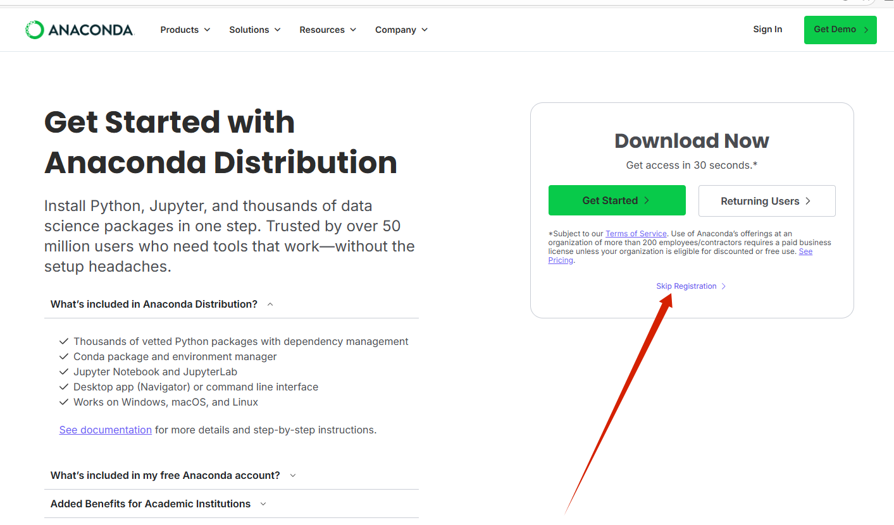
可以跳过注册，我们直接进入下载界面。
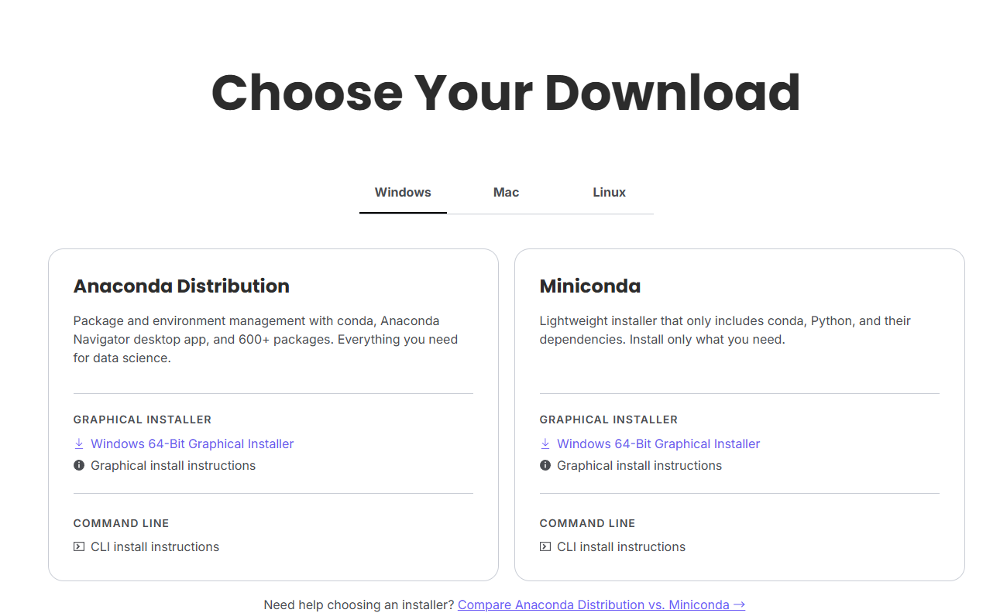
可以看到，此处我们可以下载Anconda或者Miniconda，请你按照自己的需求下载。
运行安装包执行文件，依次点击下一步即可，可以自定义安装的路径，中间的安装设置按照默认的来即可。
如果你有任何问题，可以前往Anconda安装指南，选择你的对应选项，既可以获得详细的安装教程。例如下图这样。
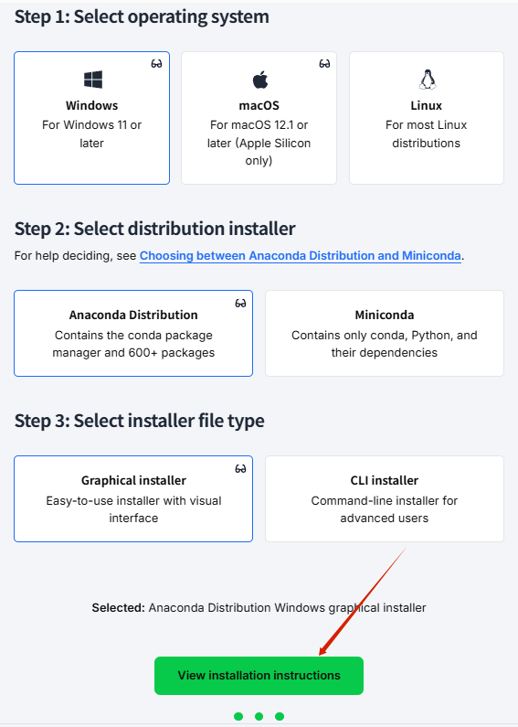
我们点击箭头处按钮就可以获得对应的安装指南。
完场上述步骤之后，需要再检查下 conda 是否能够正常使用。在电脑左下角搜索找到 Anaconda Prompt，点击打开后，在控制台中输入 conda --version，回车如果返回了 conda 版本信息则说明安装成功。
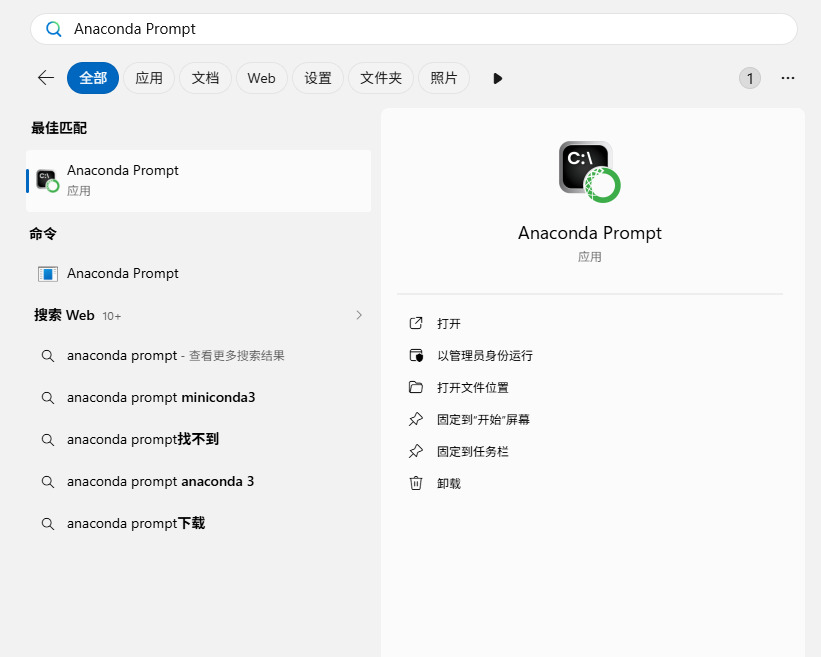
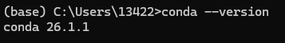
如图，就代表我们安装成功了。
在窗口中输入 conda list，会返回当前环境下已经安装好的包，如果出现该列表则说明 conda 已经正确安装。其中，包含了对应的解释器 python。
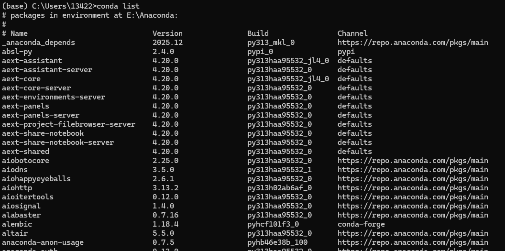
一般来说，我们是不会处理我们的base环境的。接下来我们会介绍一些Conda的常见操作。学会这些就已经差不多。
使用
至此完成了 conda 包和环境管理工具的安装，此时我们可以进行一些简单的配置并尝试创建 conda 环境，安装需要的库和运行简单的 python 程序。
配置下载源
Conda 包管理器下载各类库的来源是国外的服务器，常常会面临下载速度慢的问题。可以为 conda 添加 软件包通道 （channel），以清华源为例，在打开的 Anaconda prompt 控制台窗口中，输入如下命令可以将清华源的两个地址添加到通道。
conda config --add channels https://mirrors.tuna.tsinghua.edu.cn/anaconda/pkgs/free/
conda config --add channels https://mirrors.tuna.tsinghua.edu.cn/anaconda/pkgs/main/为了在查看 conda 软件包通道的下载链接时能显示我们手动配置的通道地址，可以通过如下命令进行设置：
conda config --set show_channel_urls yes如果不配置下载源，conda 会使用默认的软件包通道，即从官方 Anaconda 仓库获取软件包。具体的软件包通道情况可以通过 conda config --show 命令查看，返回的信息不仅能看到下载源的地址信息，还能看到创建的 conda 环境所在的文件夹。如果想要重置下载源的信息，可以用 conda config --remove-key channels 命令实现。
此部分仅仅介绍到此即可，只要只要学会，可以使用国内的地址来下载各类库即可，如果有别的想添加的通道，可以询问AI，并让他提供conda的指令即可。
环境管理
现在来到 conda 的另一大功能，就是环境管理，它可以创建、管理和切换不同的环境，这些环境之间是相互独立的，每个环境当中的 Python 版本和软件包版本可以不相同，使得我们可以把依赖版本不同的项目放在同一台设备上的不同 conda 环境中运行。
创建（删除）环境
要创建一个新的 conda 环境，可以使用 conda create 命令，指定该环境下所需的 Python 版本和要安装的软件包。例如：
conda create -n myenv python=3.8 numpy==1.24.0 matplotlib其中myenv是我们的环境名，可以随意取，但是最好是针对你环境工作情况来取，这样你可以更简单的管理你的环境。
并在其中安装 Python 3.8、NumPy 1.24.0 和 Matplotlib。在创建环境时，会有软件包列表的提示。输入 y 确认后即等待环境创建即可。此处注意版本，如果你没有像numpy一样写好版本，他就会像matplotlib一样直接安装最新版。
如果不想要一个环境了，例如我们要把 myenv 这个名字的环境删除，可以通过如下命令进行删除：
conda remove -n myenv --all此时我们就可以使用conda env list来查看我们现在有几个环境，如图：
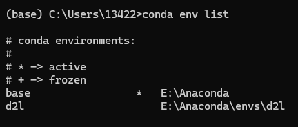
激活（切换）环境
但是此时我们根据如下位置判断我们所在的 conda 环境仍然是名为 base 的环境，因此我们要激活并切换到 myenv 环境中。
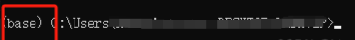
通过如下命令可实现激活并切换环境的功能，不同系统上的命令有所区别。
# windows
conda activate myenv
# Linux/Unix
source activate myenv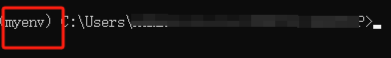
如果不切换环境，而只是退出当前环境，可以用 conda deactivate 退出当前的 conda 环境。
下载（卸载）库
当我们要在不同环境下安装库时，需要先切换到指定环境当中，例如我们要下载或者卸载 scipy，可以执行如下命令进行：
# 下载安装
conda install scipy
# 卸载
conda remove scipy至于版本选择，与我们前面的环境创建的规则是一致的。
导出（导入）环境
当我们想要保存某个环境的配置信息，例如下载源信息、环境的Python版本信息、安装的包的版本信息等，可以先切换到指定环境下，通过以下命令将这些配置信息导出：
conda env export > environment.yml该命令会将当前的环境配置信息导出到为 environment.yml 配置信息文件，文件导出地址默认为当前工作目录（也可以指定输出的绝对地址）。
这时候，我们将配置文件传到另一台电脑，想基于该配置文件创建 conda 环境，可以通过以下命令：
conda env create -f environment.yml试运行 py 文件
这里我们写一个名为 test.py 的简单的 python 脚本，但用到需要额外安装的 numpy 库，代码如下：
import numpy as np
array = np.random.rand(10)
mean = np.mean(array)
print(mean)将该脚本文件放到控制台的工作目录下（或者把控制台工作目录切换到脚本文件的位置），输入如下命令：
python test.py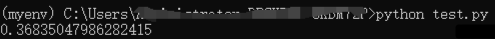
在VSCode或者Pycharm中使用Conda环境
此部分比较基础，可以前往这个链接的第六第七部分学习。
如果还是不懂的话可以自己多试试:)，我就不写了，实在不是因为不想再下一次Pycharm
CUDA与cuDNN 安装与验证
如果你已经开始准备进行深度学习，使用GPU加速是必要的，所以我们会用到CUDA，此处会有详细的使用方法，但是请你先别急着跟着下载，先看完以后，在与下一部分的版本对照下载:)
准备工作与环境检查
在安装前，需要先确保你的电脑硬件和软件环境满足要求。
你需要一块来自NVIDIA的独立 显卡。可以访问NVIDIA官网的CUDA GPU列表查询你的显卡型号是否支持CUDA。
接下来，我们可以按下Win+R打开我们的运行界面，再输入cmd，打开命令提示符。输入 nvidia-smi 并回车。
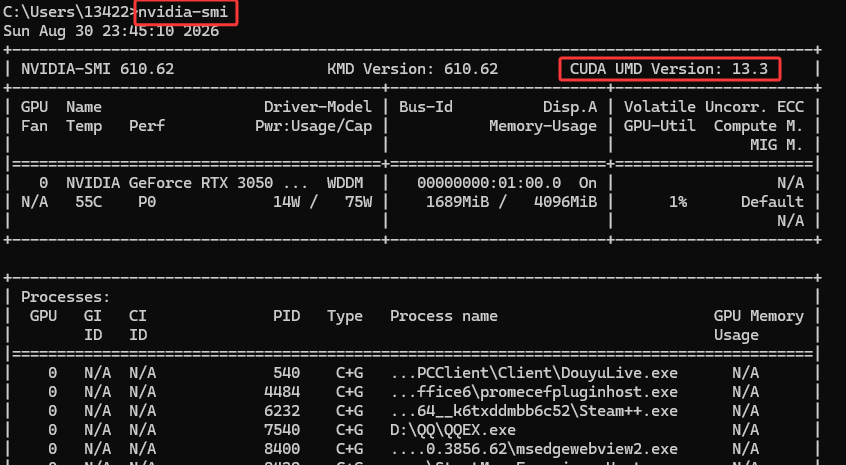
“CUDA Version” 字段则代表当前驱动最高能支持的CUDA版本，不是你已安装的CUDA，我们这边就说明我们最高可以安装CUDA 13.3的版本。如果不够的话，就更新自己的英伟达驱动即可。
如果你还没有下载NVIDIA驱动，请你前往驱动下载页面下载并安装最新的显卡驱动。NVIDIA
安装CUDA Toolkit
CUDA 是NVIDIA推出的并行计算平台和编程模型 ，是GPU加速的基础。
我们可以前往CUDA Toolkit下载页面。
且等我们选择好我们的CUDA版本以后，安装对应的CUDA Toolkit即可。例如我们想安装13.0版本，我们就可以安装下图红框的版本，但是我们最好还是装其中的最新版。
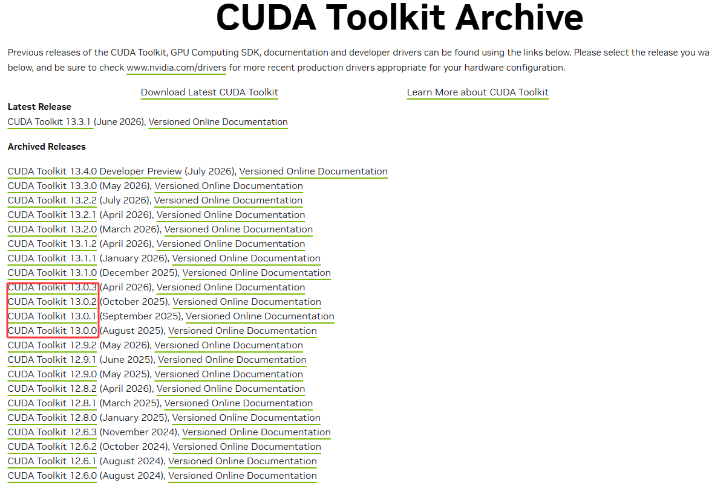
推荐下载local版本：
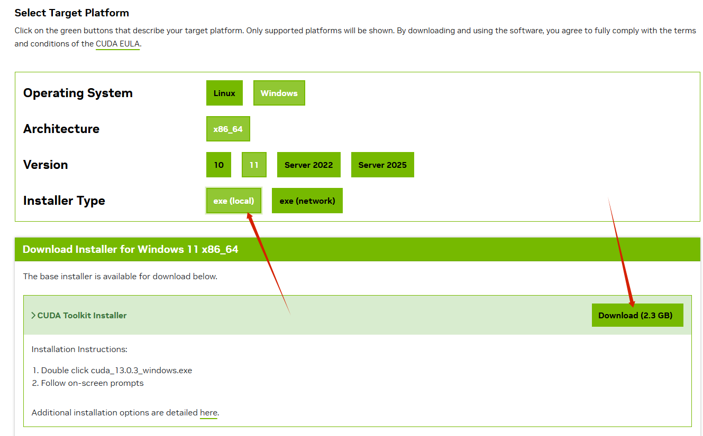
下面为安装过程。
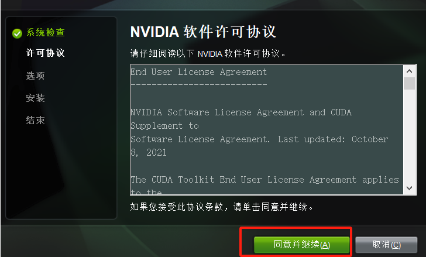
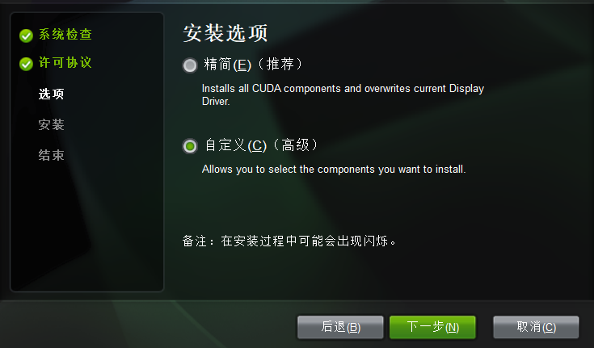
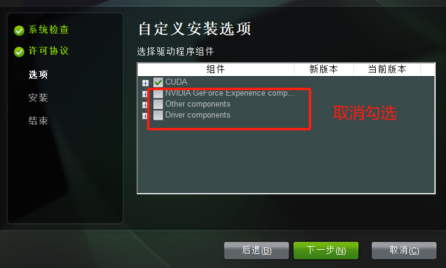
这其中的组件分别有以下作用：
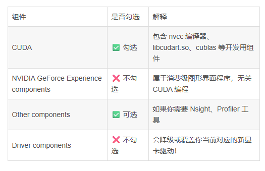
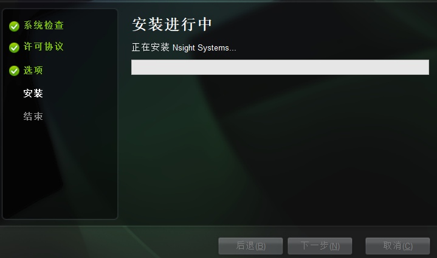
安装完成重启电脑。我们再进行下一步操作。
此处我们补充一个点,如果你安装的版本非常低,例如11.8等等,可能安装前,CUDA在安装过程中会有两个选择路径的时候。
第一次选择的时候,是刚刚开始安装的时候:(此处由于我没有下载低版本,我就使用CSDN中的图片了)
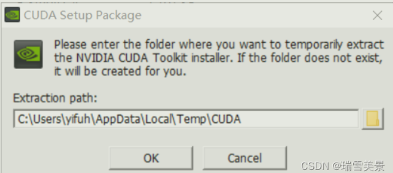
此时的地址为临时安装的地址,可以就默认,因为后期安装完成后,这个文件夹会被自动删除.
第二次是在选择组件以后的选择路径:
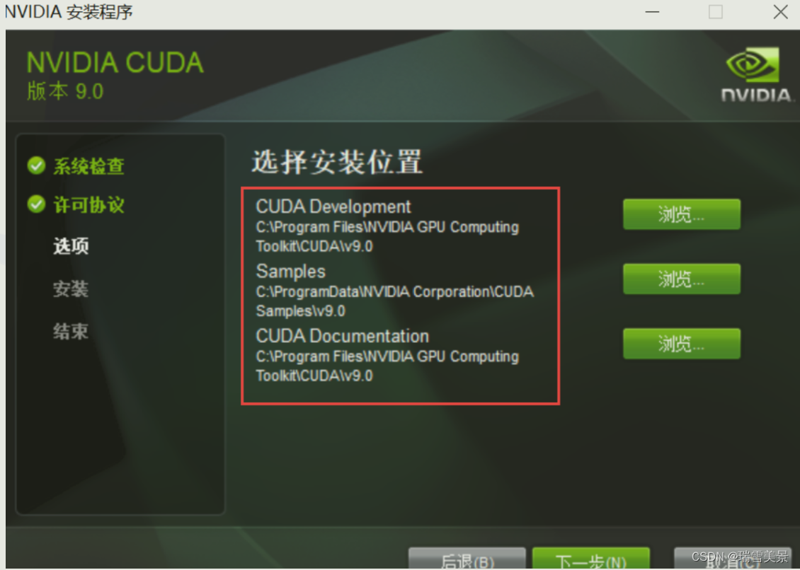
如图,这时候的路径是会保存下来的,可以自定义
一定要注意这两个图片中的路径不要设置成同一个路径，因为cuda安装完会自动删除一开始的临时安装文件，设置成一样的，cuda也会被同时删除
安装程序通常会自动添加系统环境变量。为保险起见，建议手动检查：
右键点击“此电脑” -> “属性” -> “高级系统设置” -> “环境变量”。
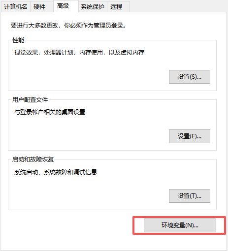
在“系统变量”中找到并选中Path，点击“编辑”。
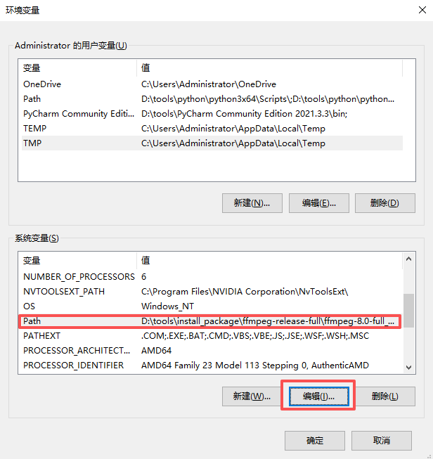
注意,如果以下路径已经有了就不要动了,我们这边只是保险起见:
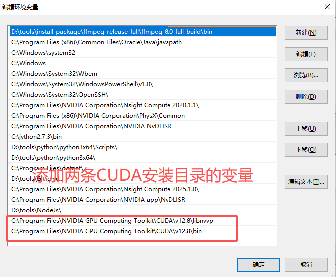
再先查看系统环境变量是否有添加以下2个环境变量，没有则手动添加，确保其中包含以下两条CUDA的路径:
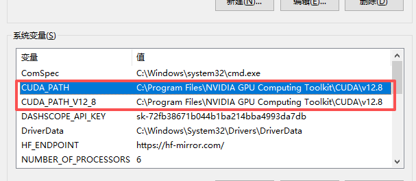
其中的V后面的是你的版本,如果你是13.0,就变成V13_0即可
如果没有，请点击“新建”手动添加。
安装cuDNN库
cuDNN是NVIDIA针对深度神经网络 优化的GPU加速库。安装cuDNN前，必须确保CUDA已成功安装。
我们可以前往cuDNN下载页面。
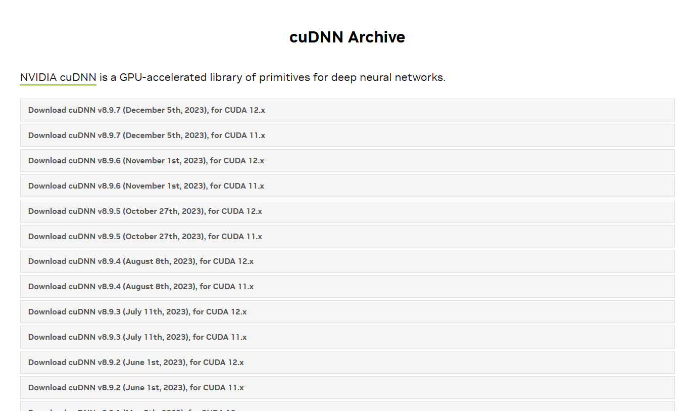
这是最重要的一步：你必须下载与你的CUDA版本严格匹配的cuDNN版本。例如，如果你安装了CUDA 12.8，就必须下载对应CUDA 12.x系列的cuDNN。
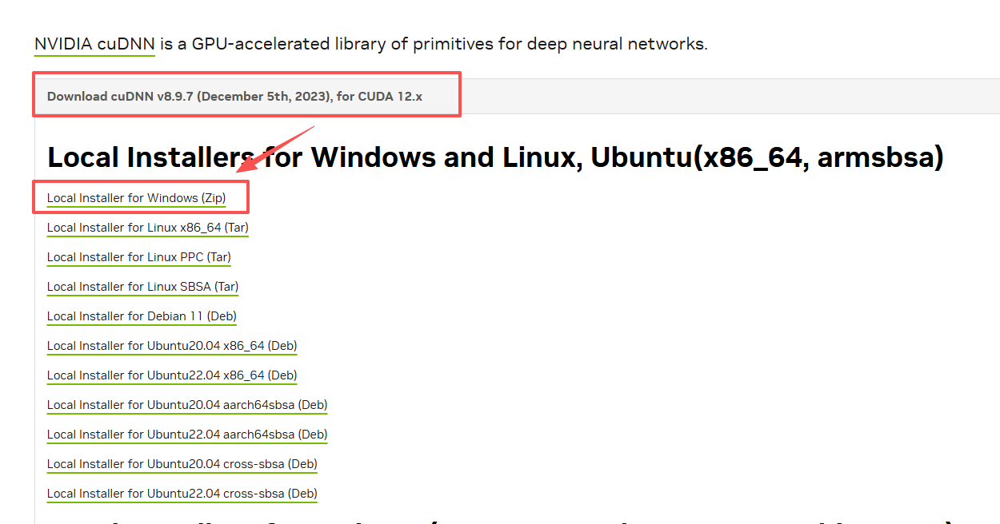
cuDNN的安装本质上就是将文件复制到CUDA的目录中。
下载的文件是一个压缩包（如.zip格式），将其解压，你会看到 bin、include、lib 三个文件夹。
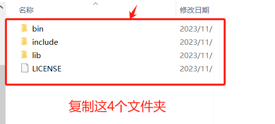
打开你的CUDA安装目录（第二步中记住的路径，例如 C:FilesGPU Computing Toolkit2.8）。
将解压后 bin、include、lib 文件夹中的所有内容，分别复制（或拖放）到CUDA目录下对应的同名文件夹里。如果提示需要管理员权限或文件覆盖，选择同意即可。需要注意：之后重启电脑
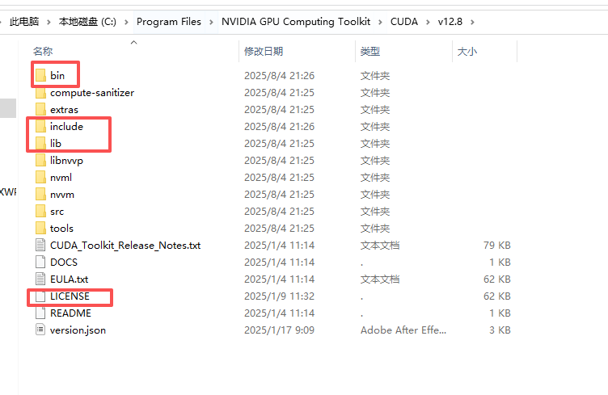
请注意：一个常见的错误是将cuDNN文件复制到了错误的子目录（如 compute-sanitizer），这会导致安装失败。请确保文件被复制到了CUDA根目录下的 bin、include、lib 文件夹。
验证安装
验证CUDA
完成以上步骤后，请重启电脑，然后通过以下方法验证是否安装成功。
打开新的命令提示符，输入 nvcc –version 并回车。
如果成功安装，该命令将显示你安装的CUDA编译器（nvcc）的版本信息:
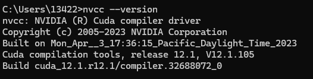
验证cuDNN（通过Python/PyTorch）（不是开发的可以不用验证这一步）
这是验证整个环境（CUDA + cuDNN）是否可用的最佳方式。
打开命令提示符，运行以下命令：
python -c “import torch; print(torch.cuda.is_available())”如果输出为 True，则恭喜你，你的PyTorch已经可以成功调用GPU进行加速了,但是注意要先安装Pytorch,不然的话肯定用不了。
Pytorch
我们前往Pytorch官网
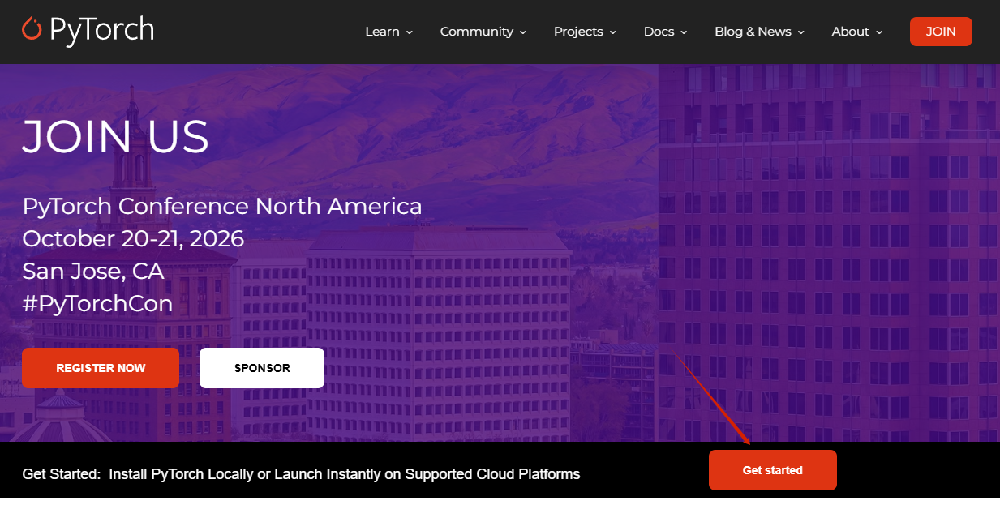
选择我们想要的版本,复制下方的指令到我们想要安装Pytorch的Conda环境,就可以成功安装了
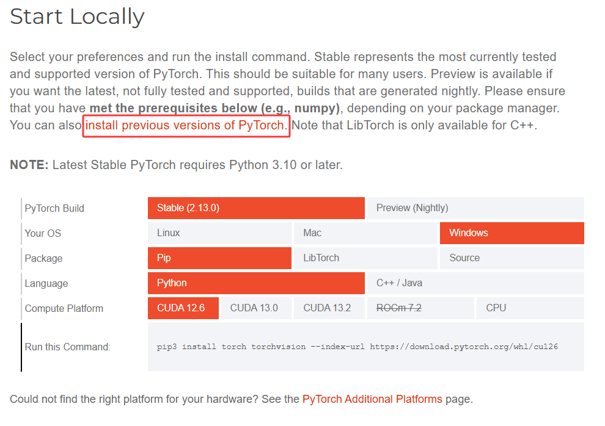
如果你的CUDA版本不在这个表格里,可以前往红框处下载历史版本.
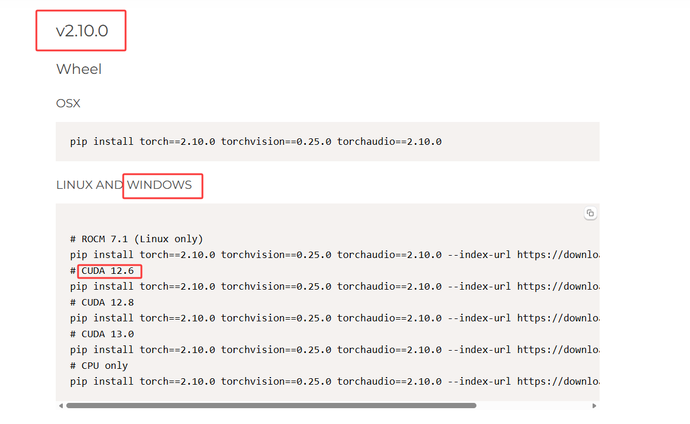
如图我们就展示了,如果我们要下载Pytorch v2.10.0的CUDA 12.6版本. 直接复制下一行的指令即可,安装方法同上.
Python、PyTorch、CUDA 与显卡版本对应关系速查表
这部分是我之前在CSDN中看到的一篇文章.
本文提供一份保姆级的版本对应关系速查表，涵盖从 RTX 50 系列 (Blackwell) 到经典老卡的软硬件兼容信息。建议收藏保存，每次配环境前查一下，能省下大量的排坑时间！
在看表格前，先理清显卡架构的代际关系与 CUDA 版本的强绑定逻辑。
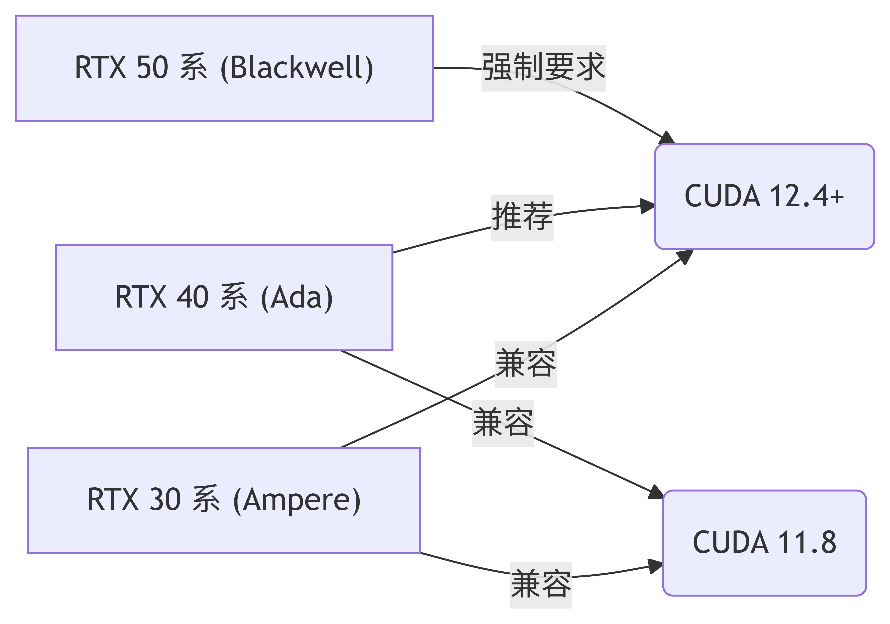
PyTorch 是目前兼容性最好的框架，只要 CUDA 驱动版本 足高，通常都能向下兼容。对于使用最新硬件（如 RTX 50 系）的用户，请务必使用 2.4 或更高版本。
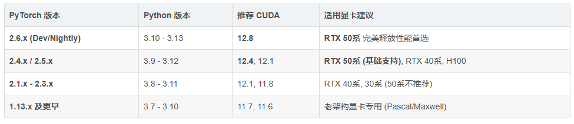
如果你使用的是 Blackwell 架构 (RTX 50系) 或 Ada 架构 (RTX 40系)，建议优先使用 CUDA 12.x 的 PyTorch 包.
显卡架构决定了你的算力上限 (Compute Capability) 和 CUDA 版本的下限。新卡不能装太旧的 CUDA，老卡通常可以使用新 CUDA。
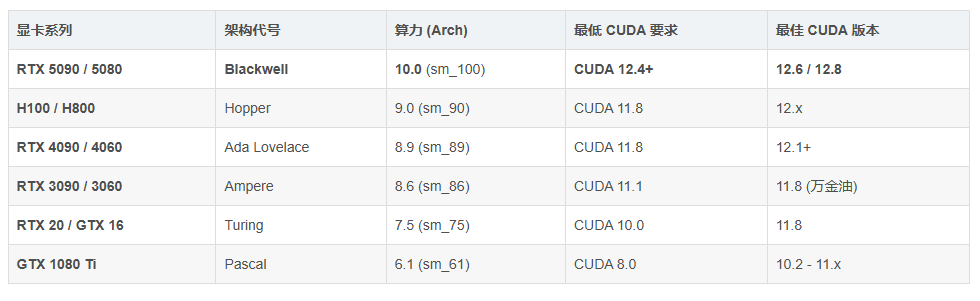
可以选择一个靠近你的显卡版本,我使用下来没有出错过.这样我们就可以选择出来我们配置下,比较合适的CUDA,Pytorch与Python的对应版本.
最后给大家总结几套不想动脑子的“黄金配置”，请根据自己的硬件对号入座：
前沿性能组 (RTX 50/40系)：
- 搭配：Python 3.11 + PyTorch 2.5/2.6 + CUDA 12.4+
- 理由：发挥新架构 (FP8 等) 极致性能，必须拥抱 CUDA 12。
主流稳定组 (RTX 30/40系)：
- 搭配：Python 3.10 + PyTorch 2.3/2.4 + CUDA 12.1
- 理由：市面上绝大多数开源项目都能跑，兼容性最佳。
经典兼容组 (RTX 20/30系)：
- 搭配：Python 3.9/3.10 + PyTorch 2.0 + CUDA 11.8
- 理由：CUDA 11.8 是过去几年的统一度量衡，极其稳定。
古董收藏组 (GTX 10系)：
- 搭配：Python 3.8 + PyTorch 1.12 + CUDA 11.3
- 理由：老卡就别追新了，能跑起来就是胜利。